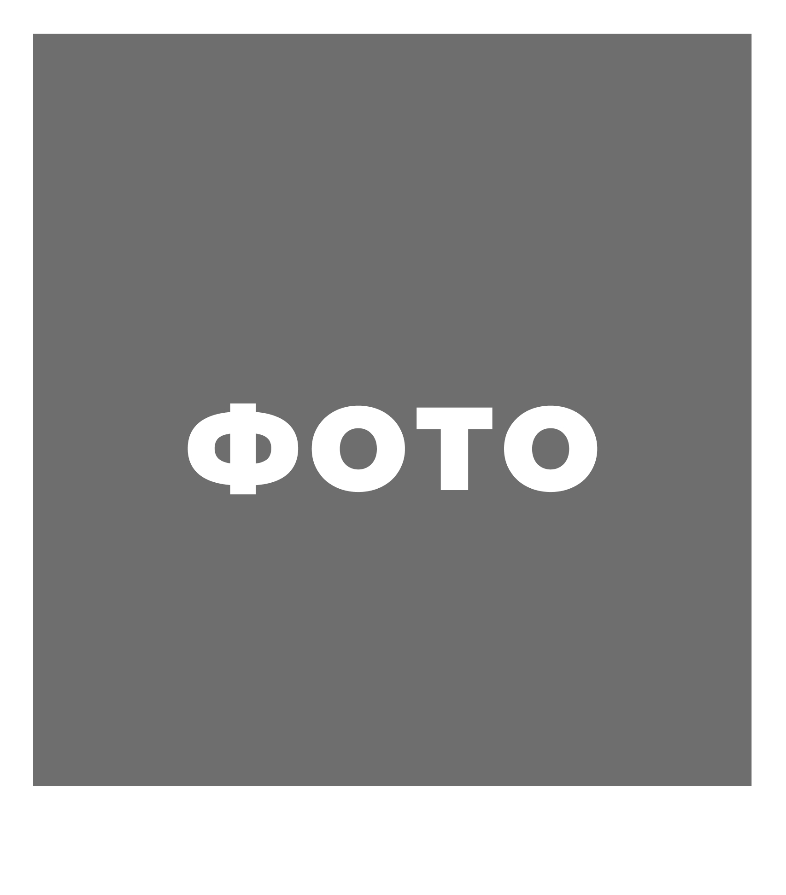

Послуги

/ Love Story
Романтична фотосесія для закоханих пар. Така зйомка дозволяє передати історію стосунків, почуття та емоції між людьми. Фотосесія може проходити на природі, у місті або в іншій атмосферній локації. Отримані фотографії часто використовують для особистих спогадів, соціальних мереж або навіть як частину підготовки до весілля.
Деталі/ Індивідуальна фотосесія
Індивідуальна фотосесія допомагає підкреслити стиль, характер та індивідуальність людини. Такий формат зйомки підходить для створення портретних фотографій, контенту для соціальних мереж або особистого портфоліо.
Деталі/ Сімейна фотосесія
Це чудова можливість зберегти теплі моменти разом із близькими людьми. Під час зйомки створюється невимушена атмосфера, щоб усі учасники почувалися комфортно перед камерою. Такі фотографії допомагають зберегти важливі спогади про спільні моменти.
Деталі/ Корпоративна зйомка
Корпоративна фотографія призначена для висвітлення ділових подій, конференцій, презентацій та інших заходів компанії. Основна мета — передати атмосферу події та підкреслити професійний імідж організації.
Деталі